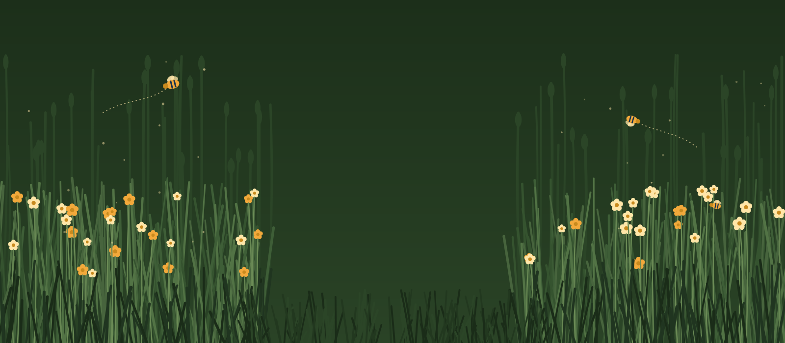

Ons plan
We willen een woongebouw maken dat van de bewoners zelf is: betaalbaar, samen en open naar de buurt.
Wat we willen bouwen
Hoe het gebouw eruitziet, weten we nog niet. Dat ontwerpen we later samen met een architect. Wat we nu al willen:
- woningen die betaalbaar blijven, ook op de lange termijn;
- gedeelde ruimtes om elkaar te ontmoeten;
- een huis dat openstaat naar de buurt.
Waar?
Waar ons huis komt, staat nog niet vast. Dat hangt af van de kavels die de gemeente uitgeeft aan wooncoöperaties.
Bij nieuwbouw op een kavel van de gemeente ligt vast hoeveel sociale huur en middenhuur er komt. Daar horen ook inkomensgrenzen bij.
Van idee tot huis
Zo ontstaat een wooncoöperatie, stap voor stap.
Een groep vormen
Mensen die samen willen wonen, vinden elkaar en richten een vereniging op.
Visie en statuten
De groep schrijft op wat ze wil bereiken. In de statuten staat hoe de vereniging werkt.
Inschrijven bij de gemeente
Wie een kavel wil, schrijft zich als groep in bij de gemeente. In Amsterdam heet die lijst de kaartenbak.
Een kavel krijgen
De gemeente geeft kavels uit aan wooncoöperaties en kiest welke groep er mag bouwen.
Ontwerpen en financieren
Samen met een architect maakt de groep het ontwerp. Het geld komt vaak van een bank, een lening van de gemeente en obligaties van mensen die het project steunen.
Bouwen en wonen
Daarna wordt er gebouwd. De leden huren hun woning van hun eigen vereniging.
Hoe lang duurt het?
Dat hangt vooral af van wanneer er een kavel is. Een voorbeeld: de groep achter De Warren, de eerste nieuwbouw-wooncoöperatie van Amsterdam, was ruim vijf jaar bezig voordat de bewoners erin trokken.
Meer weten over de route? Lees het stappenplan wooncoöperatie van de gemeente Amsterdam.